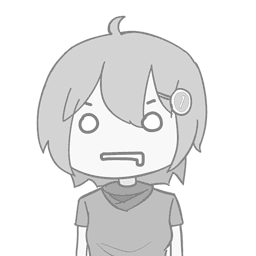

<ion-menu side="start" menuId="primerMenu" contentId="main" swipeGesture="false" (ionOpen)="menuOpened()">
  <ion-header>
    <!-- <ion-toolbar>
      <ion-title>RegistrAPP</ion-title>
    </ion-toolbar> -->
  </ion-header>
  <ion-content>
    <div class="menu-container">
      <div class="profile-container">
        
        <div class="profile-data-container">
          <p class="profile__name">{{ nombre | titlecase }}</p>
          <p class="profile__type">{{ tipoUsuario }}</p>
        </div>
      </div>
      <hr class="ruler" />
      <ul class="page-list-container" *ngFor="let c of componentes | async">
        <li>
          <ion-menu-toggle>
            <a [routerLink]="c.redirectTo">
              <div class="page-card-container" routerLinkActive="active-link">
                
                <p class="page__name">{{c.name}}</p>
              </div>
            </a>
          </ion-menu-toggle>
        </li>
      </ul>
      <ul class="page-list-container">
        <li>
          <ion-menu-toggle>
          <a routerLink="/home" (click)="logout()">
            <div class="page-card-container">
              
              <p class="page__name">Salir</p>
            </div>
          </a>
          </ion-menu-toggle>
        </li>    
    </ul>
    </div>
      <!-- <ion-list>
        <ion-menu-toggle *ngFor="let c of componentes | async">
          <ion-item [routerLink]="c.redirectTo" routerLinkActive="active-link">
            <ion-icon [name]="c.icon" slot="start" routerLinkActive="active-link"></ion-icon>
            <ion-label routerLinkActive="active-link">{{c.name}}</ion-label>
          </ion-item>
        </ion-menu-toggle>
        <ion-menu-toggle>
          <ion-item (click)="logout()" routerLink="/home">
            <ion-icon name="log-out-outline" slot="start"></ion-icon>
            <ion-label routerLinkActive="active-link">Cerrar Sesion</ion-label>
          </ion-item>
        </ion-menu-toggle>
      </ion-list> -->
  </ion-content>
</ion-menu>